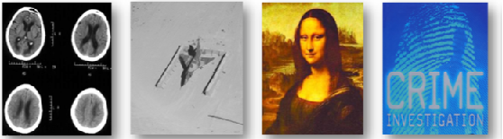

Reversible Watermarking
Objective
Reversible watermarking received much popularity in recent years because of copyright protection of data. Reversible watermarking means embedding a specific information into the cover media in such a way that it can recover the original cover media at the decoder. Reversible watermarking is useful for important media, such as medical and military image, because it need to recover completely without any loss. Reversible watermarking are also useful in other applications such as image and video coding. Image Source : Taken from Prof. Oscar Au Keynote talk at IWDW'2014
PUBLICATION
Sunil Prasad Jaiswal, Oscar C. Au, Vinit Jakhetiya, Yuanfang Guo, Anil K. Tiwari, Kong Yue "Efficient Adaptive Prediction Based Reversible Image Watermarking," in International conference on Image Processing (ICIP), page 4540 - 4544 . IEEE, (2013). [paper], [Source Code]
Sunil Prasad Jaiswal, Oscar C. Au, Vinit Jakhetiya, Yuanfang Guo, Anil K. Tiwari "Adaptive Predictor Structure Based Interpolation for Reversible Data Hiding ," Proc. of International Workshop on Digital-forensics and Watermarking (IWDW), pp 276-288, 1-4 Oct. 2014. [paper],[Source Code]
REFERENCES
[1] R. Li, O. C. Au, C. K. M. Yuk, S. Yip, and T. Chan, “Enhanced image trans-coding using reversible data hiding,” in IEEE Int. Symp. Circuits and Systems ISCAS 2007, pp. 1273-1276. [2] J.B. Feng, I.C. Lin, C.S. Tsai, Y.P. Chu, “Reversible watermarking: current status and key issues,” in International Journal of Network Security, Vol.2, No.3, PP.161- 11, May 2006 [3] M.U. Celik, G. Sharma, A.M. Tekalp, and E. Saber, “Lossless generalized lsb data embedding,” in IEEE Trans. on Image Processing, vol. 14, no. 2, pp. 253266, 2005. [4] Z. Ni, Y. Q. Shi, N. Ansari, and S.Wei, ‘Reversible data hiding,” in IEEE Trans. Circuits Syst. Video Technol.” vol. 16, no. 3, pp. 354-362, 2006. [5] C. C. Lin and N. L. Hsueh “lossless data hiding scheme based on three-pixel block differences,” in Pattern Recogni., vol. 41, no. 4, pp.1415-1425, Apr. 2008. [6] K.-S. Kim, M.-J. Leea, H.-Y. Leeb, H.-K. Leea “Reversible data hiding exploiting spatial correlation between sub-sampled images,” in Pattern Recognit., 2009, DOI: 10.1016/j.patcog.2009.04.004. [7] J. Tian, “Reversible data embedding using a difference expansion,” in IEEE Trans. Circuits Syst. Video Technol., vol. 13, no. 8, pp. 890-896, Aug. 2003. [8] H.-J. Kim, V. Sachnev, Y. Q. Shi, J. Nam, and H.-G. Choo, “A novel difference expansion transform for reversible data embedding,” in IEEE Trans. Inf. Forensic Security, vol. 3, no. 3, pp. 456-465, Sep. 2008. [9] D. M. Thodi and J. J. Rodriguez, “Expansion embedding techniques for reversible watermarking,” in IEEE Trans. Image Processing, vol. 16, no. 3, pp. 721-730, 2007. [10] Y. Hu, H.-K. Lee, and J. Li, “DE-based reversible data hiding with improved overflow location map,” in IEEE Trans. Circuits Syst. Video Technol., vol. 19, no. 2, pp. 250-260, Feb. 2009. [11] M. Chen, Z. Chen, X. Zeng, and Z. Xiong “ Reversible image watermarking based on full context prediction,” in International conference on Image Processing (ICIP), page 4253-4256. IEEE, (2009). [12] L. Luo, Z. Chen, M. Chenm, X. Zeng, X. Zhang, “Reversible Image watermarking using interpolation technique,” in IEEE Trans. Inf. Forensic Security, vol. 5, no. 1,pp. 187-193,march 2010.